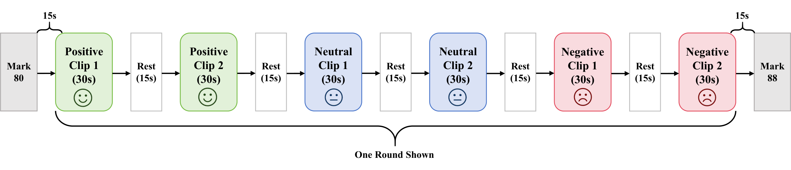

SCNUED is a raw, five-channel EEG dataset for emotion recognition research collected by the Brain-Computer Interface and Hybrid Intelligence Laboratory, South China Normal University (华南师范大学脑机接口与混合智能实验室).
The v1.0 release contains de-identified raw BDF recordings only. Preprocessed data, differential entropy features, model outputs, and source videos are not redistributed.

Dataset Scope
SCNUED was collected from 15 healthy student volunteers, including 8 males and 7 females aged 18-21 years. All participants volunteered and provided written informed consent before data collection. Each participant contributed approximately 10 minutes of effective EEG recording.
SCNUED v1.0 is distributed as a simple raw EEG package with one folder per participant and two BDF sessions per participant. The release includes 30 de-identified raw BDF files totaling 106.78 MB before compression; per-file recording durations range from 293 to 768 seconds.
Raw data access is application-based. Public repository materials include documentation, metadata examples, the access application, and the academic non-commercial data use agreement.
Citation
Please cite the associated SCNUED paper and acknowledge SCNUED when using this dataset.